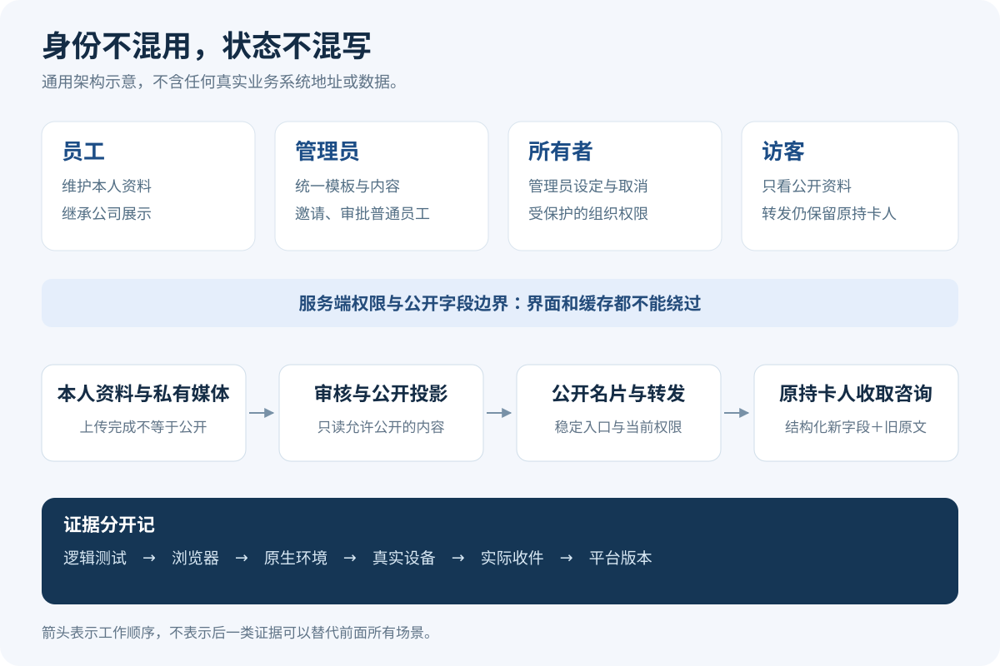

01 / 产品研究
拆开参考产品的能力
按用户任务收集公开证据，区分可独立设计、外部依赖与未知项。
从最初的产品研究与需求拆解，到角色流程、界面选择、原生问题修复和使用文档。把判断、反馈与复盘整理为可复用 Skill。
无真实照片、公司品牌、联系方式、二维码或业务后台
最初的任务入口被重写为目标卡，再转成可以检查结果的工作项。
按用户任务收集公开证据，区分可独立设计、外部依赖与未知项。
从广泛的跨端原型探索，收敛到本人、团队与访客的关键路径。
分清谁能改什么，设计大字、长内容、无头像与聊天封面的表现。
处理分享、审核、缓存、旧数据与类型草稿；保留原持卡人的归属。
将逻辑、浏览器、原生环境、设备与实际收件分开，未测不写成通过。
整理角色手册、截图来源与版本回执，用复盘更新下一次工作方法。

用外层容器负责触控与布局，让原生输入保持正常文字行；空白、填字、清空重填和字号变化分别核对。由此学到：验证环境必须与结论一致。
把上传、审核、公开投影、分享预览和实际收到拆开。既不绕过审核，也不把私有图片直接公开来掩盖问题。
分别检查当前权限、网络读取、旧指纹与迟到响应。只有新的成功校验才能恢复公开资料，缓存不是权限凭证。
新记录分字段，旧记录保留原文，不猜测数字字符串就是电话。按可靠字段提供复制或拨号，兼顾兼容与使用细节。
为文字、图片与视频保存本次编辑草稿，持久化时只提交当前激活类型，避免不同类型的媒体身份串用。
一个精简入口，按问题读取研究、权限、界面、分享、兼容、验证与复盘资料；附带模板和证据检查脚本。
$card-product-workflow
这里的案例、目标卡与画面均为匿名改写或从零重建。没有原公司代码、内部文档、照片、会话与部署信息；不以未验证的上线或商业指标作宣传。